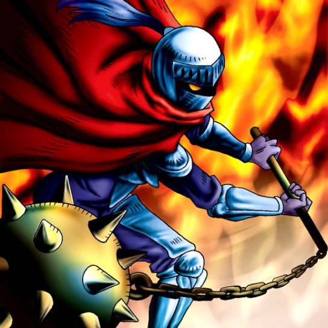

Charubin the Fire Knight

STATS
ATK: 1100
DEF: 800DECK COST
Deck Cost per Card: 19Fusion List (31 Possible Fusions)
- Charubin the Fire Knight + Armaill = Flame Swordsman
- Charubin the Fire Knight + Armed Ninja = Flame Swordsman
- Charubin the Fire Knight + Blue-Winged Crown = Crimson Sunbird
- Charubin the Fire Knight + Celtic Guardian = Flame Swordsman
- Charubin the Fire Knight + Dragoness the Wicked Knight = Flame Swordsman
- Charubin the Fire Knight + Droll Bird = Mavelus
- Charubin the Fire Knight + Fiend Reflection #2 = Mavelus
- Charubin the Fire Knight + Flame Swordsman = Vermillion Sparrow
- Charubin the Fire Knight + Fusionist = Flame Cerebrus
- Charubin the Fire Knight + Gemini Elf = Ushi Oni
- Charubin the Fire Knight + Hard Armor = Flame Swordsman
- Charubin the Fire Knight + Hibikime = Flame Swordsman
- Charubin the Fire Knight + Hyo = Flame Swordsman
- Charubin the Fire Knight + Kagemusha of the Blue Flame = Flame Swordsman
- Charubin the Fire Knight + Kurama = Mavelus
- Charubin the Fire Knight + Little Chimera = Flame Cerebrus
- Charubin the Fire Knight + M-Warrior #1 = Flame Swordsman
- Charubin the Fire Knight + M-Warrior #2 = Flame Swordsman
- Charubin the Fire Knight + Masaki the Legendary Swordsman = Flame Swordsman
- Charubin the Fire Knight + Masked Clown = Flame Swordsman
- Charubin the Fire Knight + Mavelus = Crimson Sunbird
- Charubin the Fire Knight + Milus Radiant = Flame Cerebrus
- Charubin the Fire Knight + Obese Marmot of Nefariousness = Flame Cerebrus
- Charubin the Fire Knight + Princess of Tsurugi = Flame Swordsman
- Charubin the Fire Knight + Swordsman from a Foreign Land = Flame Swordsman
- Charubin the Fire Knight + The Little Swordsman of Aile = Flame Swordsman
- Charubin the Fire Knight + Trap Master = Flame Swordsman
- Charubin the Fire Knight + Unknown Warrior of Fiend = Flame Swordsman
- Charubin the Fire Knight + Vishwar Randi = Flame Swordsman
- Charubin the Fire Knight + Winged Dragon, Guardian of the Fortress #2 = Mavelus
- Charubin the Fire Knight + Wood Clown = Flame Swordsman